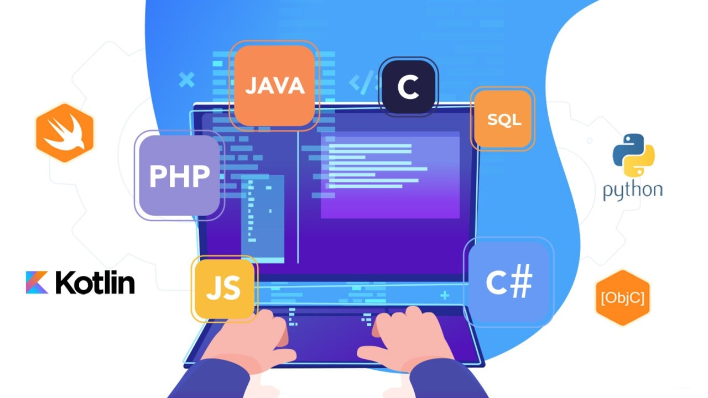

Los lenguajes de programación más usados en la actualidad
Una buena muestra de la evolución del mundo técnico informático es la aparición de nuevos lenguajes de programación. Si estás buscando escribir tu primera línea de código, seguro te estás preguntando cuáles son los lenguajes de programación más utilizados o cuántos lenguajes de programación existen.
Aunque no hay una cifra exacta, se estima que en el mundo hay más de 200 lenguajes de programación. Hay quienes suben la cifra a 700. Muchos han sido olvidados con el tiempo y no es algo de que sorprenderse.
Los lenguajes de programación son la base para escribir instrucciones, órdenes y algoritmos. Lo que conocemos como código. Y con ese código hacemos funcionar máquinas físicas, dispositivos electrónicos, programas, aplicaciones y demás software. En resumen, que necesitamos lenguajes de programación para crear código y necesitamos código para comunicarnos con máquinas, ordenadores y aparatos en general.
Si quieres introducirte en este mundo o abrirte a mejores campos laborales, debes conocer cuáles son los mejores lenguajes de programación y, así, decidir qué tecnología aprender, sobre todo, si estás iniciando tu carrera en la industria del desarrollo web.
TIOBE es una empresa holandesa dedicada al análisis de código, la cual, analiza día a día más de 1.000 millones de líneas de código de desarrolladores públicos y privados de empresas de todo tipo. Y además de eso son conocidos por confeccionar un índice con los lenguajes de programación más populares cada mes.
Ya sabiendo cuales son los lenguajes de programación más usados en la actualidad, a continuación, te explicaremos más sobre cada lenguaje y conocerás por qué son los más demandados en este año 2022.